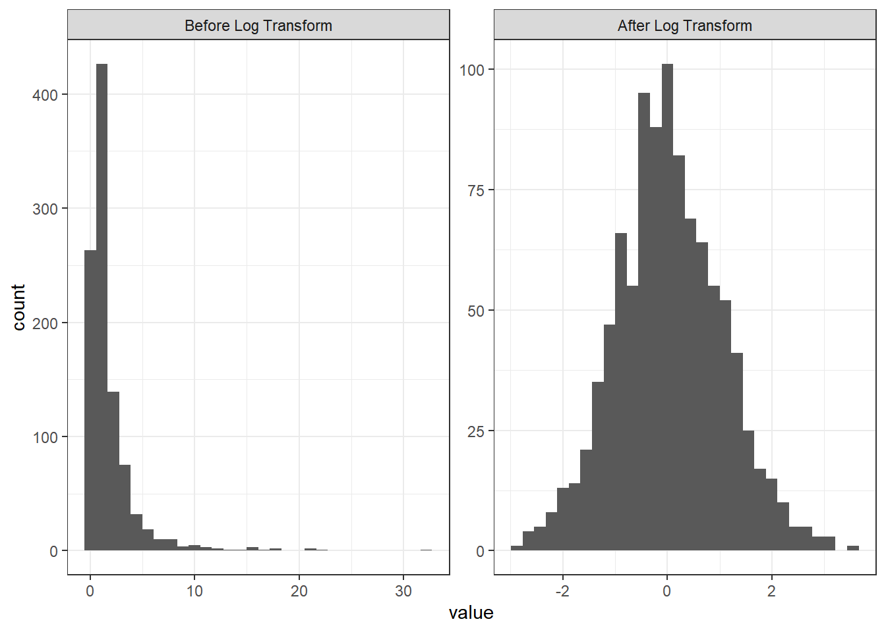
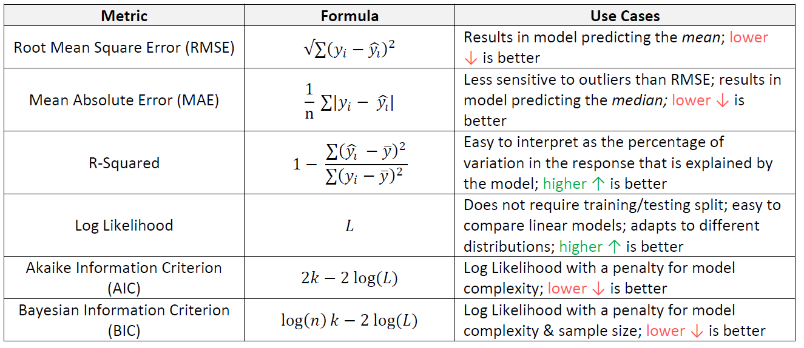

8 Introduction to modeling
About 40-50% of the exam grade is based on modeling. The goal is to be able to predict an unknown quantity. In actuarial applications, this tends to be claims that occur in the future, death, injury, accidents, policy lapse, hurricanes, or some other insurable event.
8.1 Modeling vocabulary
Modeling notation is sloppy because there are many words that mean the same thing.
The number of observations will be denoted by \(n\). When we refer to the size of a data set, we are referring to \(n\). Each row of the data is called an observation or record. Observations tend to be people, cars, buildings, or other insurable things. These are always independent in that they do not influence one another. Because the Prometric computers have limited power, \(n\) tends to be less than 100,000.
Each observation has known attributes called variables, features, or predictors. We use \(p\) to refer the number of input variables that are used in the model.
The target, response, label, dependent variable, or outcome variable is the unknown quantity that is being predicted. We use \(Y\) for this. This can be either a whole number, in which case we are performing regression, or a category, in which case we are performing classification.
For example, say that you are a health insurance company that wants to set the premiums for a group of people. The premiums for people who are likely to incur high health costs need to be higher than those who are likely to be low-cost. Older people tend to use more of their health benefits than younger people, but there are always exceptions for those who are very physically active and healthy. Those who have an unhealthy Body Mass Index (BMI) tend to have higher costs than those who have a healthy BMI, but this has less of an impact on younger people. In short, we want to be able to predict a person’s future health costs by taking into account many of their attributes at once.
This can be done in the health_insurance data by fitting a model to predict the annual health costs of a person. The target variable is y = charges, and the predictor variables are age, sex, bmi, children, smoker and region. These six variables mean that \(p = 6\). The data is collected from 1,338 patients, which means that \(n = 1,338\).
8.2 Modeling notation
Scalar numbers are denoted by ordinary variables (i.e., \(x = 2\), \(z = 4\)), and vectors are denoted by bold-faced letters
\[\mathbf{a} = \begin{pmatrix} a_1 \\ a_2 \\ a_3 \end{pmatrix}\]
We organize these variables into matrices. Take an example with \(p\) = 2 columns and 3 observations. The matrix is said to be \(3 \times 2\) (read as “3-by-2”) matrix.
\[ \mathbf{X} = \begin{pmatrix}x_{11} & x_{21}\\ x_{21} & x_{22}\\ x_{31} & x_{32} \end{pmatrix} \]
In the health care costs example, \(y_1\) would be the costs of the first patient, \(y_2\) the costs of the second patient, and so forth. The variables \(x_{11}\) and \(x_{12}\) might represent the first patient’s age and sex respectively, where \(x_{i1}\) is the patient’s age, and \(x_{i2} = 1\) if the ith patient is male and 0 if female.
Modeling is about using \(X\) to predict \(Y\). We call this “y-hat”, or simply the prediction. This is based on a function of the data \(X\).
\[\hat{Y} = f(X)\]
This is almost never going to happen perfectly, and so there is always an error term, \(\epsilon\). This can be made smaller, but is never exactly zero.
\[ \hat{Y} + \epsilon = f(X) + \epsilon \]
In other words, \(\epsilon = y - \hat{y}\). We call this the residual. When we predict a person’s health care costs, this is the difference between the predicted costs (which we had created the year before) and the actual costs that the patient experienced (of that current year).
Another way of saying this is in terms of expected value: the model \(f(X)\) estimates the expected value of the target \(E[Y|X]\). That is, once we condition on the data \(X\), we can make a guess as to what we expect \(Y\) to be “close to”. There are many ways of measuring “closeness”, as we will see.
8.3 Ordinary Least Squares (OLS)
Also known as simple linear regression, OLS predicts the target as a weighted sum of the variables.
We find a \(\mathbf{\beta}\) so that
\[ \hat{Y} = E[Y] = \beta_0 + \beta_1 X_1 + \beta_2 X_2 + ... + \beta_p X_p \]
Each \(y_i\) is a linear combination of \(x_{i1}, ..., x_{ip}\), plus a constant \(\beta_0\) which is called the intercept term.
In the one-dimensional case, this creates a line connecting the points. In higher dimensions, this creates a hyper-plane.

The red line shows the expected value of the target, as the target \(\hat{Y}\) is actually a random variable. For each of the data points, the model assumes a Gaussian distribution. If there is just a single predictor, \(x\), then the mean is \(\beta_0 + \beta_1 x\).

The question then is how can we choose the best values of \(\beta?\) First of all, we need to define what we mean by “best”. Ideally, we will choose these values which will create close predictions of \(Y\) on new, unseen data.
To solve for \(\mathbf{\beta}\), we first need to define a loss function. This allows us to compare how well a model is fitting the data. The most commonly used loss function is the residual sum of squares (RSS), also called the squared error loss or the L2 norm. When RSS is small, then the predictions are close to the actual values and the model is a good fit. When RSS is large, the model is a poor fit.
\[\text{RSS} = \sum_i(y_i - \hat{y})^2\]
When you replace \(\hat{y_i}\) in the above equation with \(\beta_0 + \beta_1 x_1 + ... + \beta_p x_p\), take the derivative with respect to \(\beta\), set equal to zero, and solve, we can find the optimal values. This turns the problem of statistics into a problem of numeric optimization, which computers can do quickly.
You will also see the term Root Mean Squared Error (RMSE) which is just the average of the square root of the \(\text{RSS}\), or just Mean Squared Error (MSE).
You might be asking: why does this need to be the squared error? Why not the absolute error, or the cubed error? Technically, these could be used as well but the betas would not be the maximum likelihood parameters. In fact, using the absolute error results in the model predicting the median as opposed to the mean. Two reasons why RSS is popular are:
- It provides the same solution if we assume that the distribution of \(Y|X\) is Gaussian and maximize the likelihood function. This method is used for GLMs, in the next chapter.
- It is computationally easier, and computers used to have a difficult time optimizing for MAE
What does it mean when a log transform is applied to \(Y\)? I remember from my statistics course on regression that this was done.
This is done so that the variance is closer to being constant. For example, if the units are in dollars, then it is very common for the values to fluctuate more for higher values than for lower values. Consider a stock price, for instance. If the stock is $50 per share, then it will go up or down less than if it is $1000 per share. The log of 50, however, is about 3.9 and the log of 1000 is only 6.9, and so this difference is smaller. In other words, the variance is smaller.
Transforming the target means that instead of the model predicting \(E[Y]\), it predicts \(E[log(Y)]\). A common mistake is to then the take the exponent in an attempt to “undo” this transform, but \(e^{E[log(Y)]}\) is not the same as \(E[Y]\).
8.4 R^2 Statistic
One of the most common ways of measuring model fit, which you may be familiar with from a course on linear regression, is the “R-Squared” statistic. The RSS provides an absolute measure of fit, because the number can be any positive value, but it’s not always clear what a “good” RSS is because it’s measured in units of \(Y\). The \(R^2\) statistic provides an alternative measure of fit. It takes the proportion of variance explained - so that it’s always a value between 0 and 1, and is independent of the scale of \(Y\).
\[R^2 = \frac{\text{TSS} - \text{RSS}}{\text{TSS}} = 1 - \frac{\text{RSS}}{\text{TSS}}\]
Where \(\text{TSS} = \sum(y_i - \hat{y})^2\) is the total sum of squares. TSS measures the total variance in the response \(Y\) and can be thought of as the amount of variability inherent in the response before the regression is performed. In contrast, RSS measures the amount of variability that is left unexplained after performing the regression. Hench, \(\text{TSS} - \text{RSS}\) measures the amount of variability in the response that is explained (or removed) be performing the regression, and R^2 measures the proportion of variability in \(Y\) that can be explained using \(X\). A value near 1 indicates that a large proportion of the variability in the response has been explained by the regression. A number near 0 indicates that the regression did not explain much of the variability in the response; this might occur because the linear model is wrong.
The \(R^2\) statistic has an interpretational advantage over the RSE. In actuarial applications, it is useful to use an absolute measure of model fit, such as RSS, to train the model, and then use \(R^2\) when you are explaining it to your clients so that it is easier to communicate.
This chapter was based on Chapter 3, Linear Regression, of An Introduction to Statistical Learning.
8.5 Correlation
8.5.1 Pearson’s correlation
Pearson correlation: Measures a linear dependence between two variables \(X\) and \(Y\). This is the most commonly used correlation method.
The correlation is defined by \(r\),
\[r = Cor(X,Y) = \frac{\sum(x_i - \bar{x})(y_i - \bar{y})}{\sqrt{\sum(x_i - \bar{x})^2}\sqrt{(y_i - \bar{y})^2}}\]
and this is also a measure of the linear relationship between two vectors, \(X\) and \(Y\). This suggests that we might be able to use \(r = Cor(X,Y)\) instead of \(R^2\) to assess the model fit. In the case of simple linear regression, where there is only one predictor variable, it is tree that \(R^2 = r^2\); however, this relationship does not extend automatically when there are more than one predictor variable. This is because \(X\) becomes a matrix instead of a single vector.
8.5.2 Spearman (rank) correlation
Spearman correlation: Computes the correlation between the rank of x and the rank of y variables.
\[rho = \frac{\sum(x' - m_{x'})(y'_i - m_{y'})}{\sqrt{\sum(x' - m_{x'})^2 \sum(y' - m_{y'})^2}}\] Where \(x′=rank(x)\) and \(y′=rank(y)\)
Most questions on Exam PA will ask you about Pearson’s correlation. One advantage to Spearman over Pearson is that Spearman works for ordinal variables. See Chapter 6 for the difference between ordinal and numeric variables.
8.6 Regression vs. classification
Regression modeling is when the target is a number. Binary classification is when there are two outcomes, such as “Yes/No”, “True/False”, or “0/1”. Multi-class regression is when there are more than two categories such as “Red, Yellow, Green” or “A, B, C, D, E”. There are many other types of regression that are not covered on this exam such as ordinal regression, where the outcome is an ordered category, or time-series regression, where the data is time-dependent.
8.7 Regression metrics
For any model, the goal is always to reduce an error metric. This is a way of measuring how well the model can explain the target. The phrases “reducing error”, “improving performance”, or “making a better fit” are synonymous with reducing the error. The word “better” means “lower error” and “worse” means “higher error”.
The choice of error metric has a big difference on the outcome. When explaining a model to a businessperson, using simpler metrics such as R-Squared and Accuracy is convenient. When training the model, however, using a more nuanced metric is almost always better.
These are the regression metrics that are most likely to appear on Exam PA. Memorizing these formulas for AIC and BIC is not necessary as they are in the R documentation by typing ?AIC or ?BIC into the R console.

8.8 Example
In our health insurance data, we can predict a person’s health costs based on their age, body mass index, and gender. Intuitively, we expect that these costs would increase as a person’s age increases, would be different for men than for women, and would be higher for those who have a less healthy BMI. We create a linear model using bmi, age, and sex as an inputs.
The formula controls which variables are included. There are a few shortcuts for using R formulas.
| Formula | Meaning |
|---|---|
charges ~ bmi + age |
Use age and bmi to predict charges |
charges ~ bmi + age + bmi*age |
Use age,bmi as well as an interaction to predict charges |
charges ~ (bmi > 20) + age |
Use an indicator variable for bmi > 20 age to predict charges |
log(charges) ~ log(bmi) + log(age) |
Use the logs of age and bmi to predict log(charges) |
charges ~ . |
Use all variables to predict charges |
While you can use formulas to create new variables, the exam questions tend to have you do this in the data itself. For example, if taking the log transform of a
bmi, you would add a columnlog_bmito the data and remove the originalbmicolumn.
Below we fit a simple linear model to predict charges.
library(ExamPAData)
library(tidyverse)
model <- lm(data = health_insurance, formula = charges ~ bmi + age + sex)The summary function gives details about the model. First, the Estimate, gives you the coefficients. The Std. Error is the error of the estimate for the coefficient. Higher standard error means greater uncertainty. This is relative to the average value of that variable. The p value tells you how “big” this error really is based on standard deviations. A small p-value (Pr (>|t|))) means that we can safely reject the null hypothesis that says the coefficient is equal to zero.
The little *, **, *** tell you the significance level. A variable with a *** means that the probability of getting a coefficient of that size given that the data was randomly generated is less than 0.001. The ** has a significance level of 0.01, and * of 0.05.
##
## Call:
## lm(formula = charges ~ bmi + age + sex, data = health_insurance)
##
## Residuals:
## Min 1Q Median 3Q Max
## -14974 -7073 -5072 6953 47348
##
## Coefficients:
## Estimate Std. Error t value Pr(>|t|)
## (Intercept) -6986.82 1761.04 -3.967 7.65e-05 ***
## bmi 327.54 51.37 6.377 2.49e-10 ***
## age 243.19 22.28 10.917 < 2e-16 ***
## sexmale 1344.46 622.66 2.159 0.031 *
## ---
## Signif. codes: 0 '***' 0.001 '**' 0.01 '*' 0.05 '.' 0.1 ' ' 1
##
## Residual standard error: 11370 on 1334 degrees of freedom
## Multiple R-squared: 0.1203, Adjusted R-squared: 0.1183
## F-statistic: 60.78 on 3 and 1334 DF, p-value: < 2.2e-16For this exam, variable selection tends to be based on the 0.05 significance level (single star
*).
When evaluating model performance, you should not rely on the summary alone as this is based on the training data. To look at performance, test the model on validation data. This can be done by either using a hold out set, or using cross-validation, which is even better.
Let’s create an 80% training set and 20% testing set. You don’t need to worry about understanding this code as the exam will always give this to you.
set.seed(1)
library(caret)
#create a train/test split
index <- createDataPartition(y = health_insurance$charges,
p = 0.8, list = F) %>% as.numeric()
train <- health_insurance %>% slice(index)
test <- health_insurance %>% slice(-index)Train the model on the train and test on test.
Let’s look at the Root Mean Squared Error (RMSE).
## [1] 11421.96And the Mean Absolute Error as well.
## [1] 94.32336The above metrics do not tell us if this is a good model or not by themselves. We need a comparison. The fastest check is to compare against a prediction of the mean. In other words, all values of the y_hat are the average of charges, which is about $13,000.
## [1] 12574.97## [1] 96.63604The RMSE and MAE are both higher (worse) when using just the mean, which is what we expect. If you ever fit a model and get an error which is worse than the average prediction, something must be wrong.
The next test is to see if any assumptions have been violated.
First, is there a pattern in the residuals? If there is, this means that the model is missing key information. For the model below, this is a yes, which means that this is a bad model. Because this is just for illustration, we are going to continue using it.

Figure 8.1: Residuals vs. Fitted
The normal QQ shows how well the quantiles of the predictions fit to a theoretical normal distribution. If this is true, then the graph is a straight 45-degree line. In this model, you can definitely see that this is not the case. If this were a good model, this distribution would be closer to normal.
Figure 8.2: Normal Q-Q
Once you have chosen your model, you should re-train over the entire data set. This is to make the coefficients more stable because n is larger. Below you can see that the standard error is lower after training over the entire data set.
all_data <- lm(data = health_insurance,
formula = charges ~ bmi + age)
testing <- lm(data = test,
formula = charges ~ bmi + age)| term | full_data_std_error | test_data_std_error |
|---|---|---|
| (Intercept) | 1744.1 | 3824.2 |
| bmi | 51.4 | 111.1 |
| age | 22.3 | 47.8 |
All interpretations should be based on the model which was trained on the entire data set. Obviously, this only makes a difference if you are interpreting the precise values of the coefficients. If you are just looking at which variables are included, or at the size and sign of the coefficients, then this would probably not make a difference.
## (Intercept) bmi age
## -4526.5284 286.8283 228.4372Translating the above into an equation we have
\[\hat{y_i} = -4,526 + 287 \space\text{bmi} + 228\space \text{age}\]
For example, if a patient has bmi = 27.9 and age = 19 then predicted value is
\[\hat{y_1} = 4,526 + (287)(27.9) + (228)(19) = 16,865\]
This model structure implies that each of the variables \(x_1, ..., x_p\) each change the predicted \(\hat{y}\). If \(x_{ij}\) increases by one unit, then \(y_i\) increases by \(\beta_j\) units, regardless of what happens to all of the other variables. This is one of the main assumptions of linear models: variable independence. If the variables are correlated, say, then this assumption will be violated.
| Readings | |
|---|---|
| ISLR 2.1 What is statistical learning? | |
| ISLR 2.2 Assessing model accuracy |